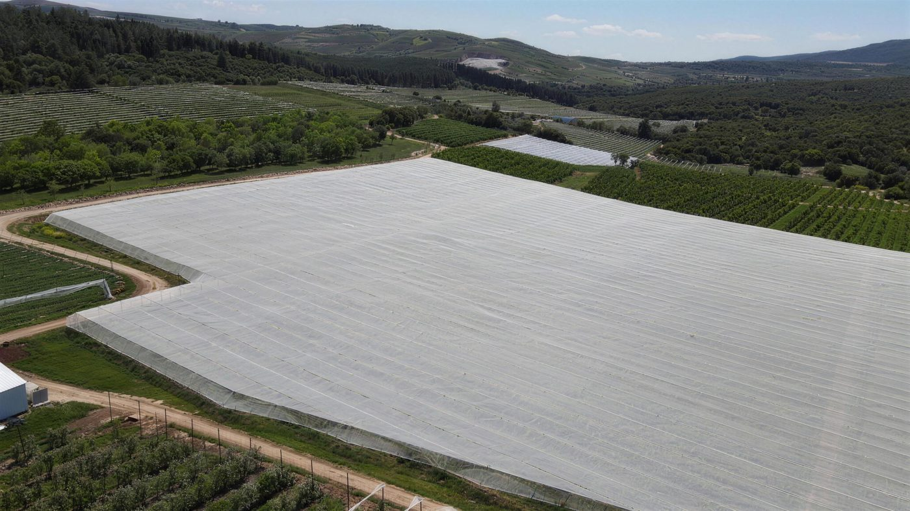
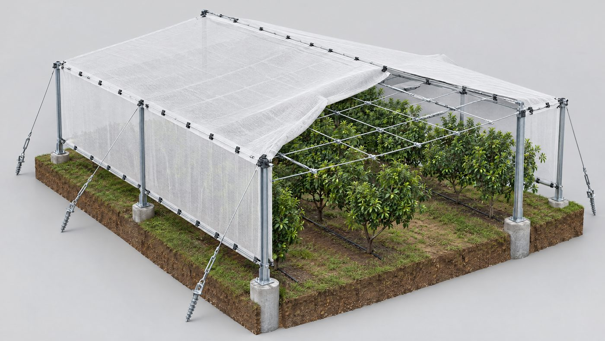

- בית רשת חקלאי הוא שלד קל של עמודים, כבלים ועוגנים שנושא רשת מעל הגידול. הוא מאוורר ואינו מבוקר אקלים, ולכן ההשקעה בו נמוכה בהרבה מחממה.
- הרשת נבחרת לפי מטרה: הצללה, ברד, חרקים או רוח. אחוז ההצללה שכתוב על התווית אינו האחוז שהצמח מקבל בפועל.
- מבנה נכשל בדרך כלל בנקודות שלא רואים: עיגון, מתיחת כבלים וחיבורי השוליים. שם מתרכזים העומסים.
- משרד החקלאות מכיר בעלות של ₪8,000 עד ₪14,000 לדונם לרוב סוגי בתי הרשת למטעים, לצורך חישוב מענק. זו אינה הצעת מחיר.
- הטעות הנפוצה ביותר שאנחנו פוגשים בשטח: לנסות לעשות לבד כדי לחסוך.
בית רשת חקלאי הוא מבנה קל של עמודים, כבלים ועוגנים, שנושא רשת מעל גידול חקלאי: רשת הצללה, רשת נגד ברד או רשת נגד חרקים. בניגוד לחממה, הוא פתוח לאוויר ואינו מבוקר אקלים. תפקידו להגן על הגידול מקרינה עודפת, מרוח, מברד וממזיקים, ולשפר את היבול ואת איכותו.
רוב החקלאים שואלים קודם כמה עולה בית רשת. השאלה שקובעת את התוצאה היא אחרת: מה המבנה צריך לעשות בשבילכם בעוד עשר שנים, ובאיזה לילה של סערה הוא ייבחן. המדריך נכתב על ידי צוות שמתכנן, מייצר ומקים בתי רשת יותר מעשרים שנה, בגליל ובחו״ל. הוא מסכם את מה שלמדנו בשטח, לצד מה שמחקר ישראלי מדד, עם מקור לכל מספר.
מתאים לכם אם
- אתם מתכננים מטע או משק ירקות של 50 דונם ומעלה בישראל, או 30 הקטר ומעלה בחו״ל.
- אתם מחליפים מבנה ישן ורוצים להבין מה השתנה בתכנון.
- חשוב לכם שהמבנה יחזיק שנים רבות, לא עונה אחת.
פחות מתאים אם
- אתם מחפשים רשת לגינה, לחלון או לחצר.
- כל מה שאתם צריכים הוא מחיר למטר רשת.
- השטח קטן מ-50 דונם.
מה זה בית רשת חקלאי, ובמה הוא שונה מחממה
ההגדרה הרשמית, ומה היא אומרת בפועל
הנחיות התכנון של הרשות לתכנון ופיתוח החקלאות מגדירות כיסוי רשת כ״רשת כיסוי המעוגנת בשלד קל ופריק על גבי הקרקע, ומיועדת להשבחת הגידול הצמחי״. באותו מסמך מופיע גם הפירוט ההנדסי בקצרה: ״שלד קל ופריק. עיגון שתי וערב בקרקע או בשולי המטע״, והכיסוי עשוי ״רשת פלסטיק עבירה למים״1.
שלוש מילים בהגדרה הזו חשובות למי שמתכנן. קל: המבנה אינו בניין. היציבות שלו נשענת על האיזון בין עמודים, כבלים ועוגנים. מעוגנת: העיגון הוא חלק מהמבנה, לא תוספת. עבירה: הרשת מעבירה אוויר ומים, ולכן היא משנה את המיקרו-אקלים בלי לסגור אותו. זה ההבדל המהותי מחממה.
חממה, בית רשת או שטח פתוח: השוואה
| קריטריון | חממה | בית רשת | שטח פתוח |
|---|---|---|---|
| כיסוי | פלסטיק או חומר קשיח שקוף בכל המעטפת | רשת שעוברים בה אוויר ומים | ללא |
| אוורור | מוגבל. תלוי בפתחים ובמערכות | טבעי, דרך הרשת. רשת צפופה נגד חרקים מקטינה אותו | מלא |
| בקרת אקלים | אפשרית: חימום, צינון, מסכים | אין. המבנה מפחית קרינה, רוח ואידוי | אין |
| הגנה | מגשם, מקור וממזיקים | מברד, מרוח, מקרינה עודפת וממזיקים, לפי סוג הרשת | אין |
| גידולים טיפוסיים | ירקות ופרחים עתירי השקעה | בננות, תפוחים, קיווי, דובדבן, אבוקדו, ירקות עלים ותבלינים | גידולי שדה ומטעים בשטחים מוגנים מטבעם |
| עלות מוכרת לירקות, לדונם2 | ₪47,000 | ₪11,000 (₪16,000 עם הדליה) | לא רלוונטי |
| תחזוקה עיקרית | החלפת כיסוי, מערכות אקלים | כבלים, עיגון, מתיחה, רשת | עיבוד בלבד |
בשורה התחתונה: בית רשת לא מנסה לשלוט באקלים. הוא מנסה למתן את הקצוות שלו. לרוב המטעים ולבננות זה מספיק, ובהשקעה נמוכה בהרבה.
סוגי בתי רשת לחקלאות
אין ״בית רשת סטנדרטי״. יש משפחות של מבנים, וכל אחת נגזרת מהגידול, מהמיכון שעובר בתוכה ומהרוח באתר. משרד החקלאות מסווג אותן בטבלת העלויות שלו, וזו נקודת פתיחה טובה2.

בית רשת גבוה ושטוח
זה המבנה של ענף הבננות ושל מטעים גבוהים. בננות גדלות גבוה יותר תחת רשת, ולכן מבנים לבננות מגיעים לגובה של עד כ-6 מטרים17. הגובה מגדיל את חשיפת המבנה לרוח, ומכאן שהעיגון וכבלי ההיקף הם לב התכנון. בטבלת משרד החקלאות, בית רשת גבוה לבננות מסומן כמבנה שנדרש לו היתר בנייה2. הרחבה במדריך לבית רשת לבננות.
בית רשת נמוך
מבנה למטעים שגובה הנוף שלהם מוגבל. משרד החקלאות מונה בקטגוריה הזו דובדבן, ענבים, פירות קיץ ותאנים, וכן כרם מאכל וליצ׳י. לפי הטבלה, עד גובה 4 מטרים לא נדרש היתר בנייה לחלק מהגידולים, ומעליו נדרש2.
בית רשת עם הדליה, כולל הדליה בצורת סוכה
כאן אותם עמודים נושאים גם את הרשת וגם את מערכת ההדליה של הגידול. זה המבנה לקיווי ולנשירים אפילים כמו תפוח, אגס ואפרסק2. בקיווי משתמשים בהדליה בצורת סוכה, שבה הצמח נפרש על משטח אופקי מתחת לרשת. השילוב חוסך עמודים, אבל מחייב לחשב את העומס של הגידול עצמו, לא רק של הרשת.
רשת תשליך ורשת מתקפלת
רשת תשליך נפרשת ישירות על שורות העצים, בלי מבנה גבוה מעליהם. זו ההשקעה הנמוכה ביותר בטבלת המשרד2. רשת מתקפלת היא בית רשת שהרשת שלו נאספת לאורך הכבלים בסוף העונה ונפרשת מחדש באביב. באזורים עם שלג היא חוסכת מהמבנה את העומס הכבד של החורף. על ההבדלים ביניהן במדריך לרשת נגד ברד למטעים.
בית רשת לירקות
בירקות עלים ובתבלינים, בית הרשת משלב בדרך כלל רשת נגד חרקים ורשת הצללה. לפי תכנית הפיתוח של המשרד, בשטחים קיימים התנאי לאישור הוא שהשטחים יהיו מחופים ברשת נגד חרקים וברשת הצללה2.
סככת העמסה ושובר רוח
שני מבנים משלימים שכדאי לתכנן יחד עם בית הרשת. סככת העמסה היא מבנה במפתח רחב שמאפשר למשאית להיכנס, לעמוד ולהעמיס בצל. שובר רוח הוא קיר רשת או שורת עצים שמקטינים את הרוח לפני שהיא פוגעת בגידול או במבנה.
בשובר רוח, ההיגיון האינטואיטיבי מטעה. קיר אטום עוצר את הרוח היטב ממש מאחוריו, אבל יוצר מערבולות, והאזור המוגן קצר. לפי שירות ההדרכה של אוניברסיטת נברסקה, צפיפות של 40% עד 60% נותנת את השטח המוגן הגדול ביותר, ומתחת ל-20% כמעט אין תועלת6.
שובר רוח: אטום יותר אינו מגן יותר
מהירות הרוח מאחורי שובר הרוח, באחוזים מהרוח הפתוחה, לפי צפיפות השובר ומרחק ממנו (H = גובה השובר). ערך נמוך = הגנה טובה יותר
הנתונים בטבלה
| 5H | 10H | 15H | |
|---|---|---|---|
| שורת עצים דלילה (25–35%) | 50% | 65% | 80% |
| שורה צפופה (40–60%) | 30% | 50% | 60% |
| כמה שורות (60–80%) | 25% | 35% | 65% |
| גדר אטומה (100%) | 25% | 70% | 90% |
אותו עיקרון חל על קירות הצד של בית רשת: פתחים ורווחים לא מתוכננים יוצרים אפקט משפך, והרוח בהם חזקה מזו שבשטח הפתוח6.
בית רשת לבננות במערב הגליל, עם רשת 11%. בית רשת לקיווי בברעם, עם הדליה בצורת סוכה. בית רשת לתפוחים ברמת הגולן, שהרשת שלו מתקפלת בחורף. שלושה גידולים, שלושה אזורים ושלושה מבנים שונים מהיסוד. המכנה המשותף הוא שהתכנון התחיל מהגידול ומהרוח באתר, ולא מקטלוג.
האנטומיה של בית רשת: הרכיבים, ולמה כל אחד מהם נכשל
בית רשת נראה פשוט. בפועל זו מערכת שבה כל רכיב מעביר כוח לרכיב הבא: מהרשת לכבלי הגג, משם לכבלי ההיקף, לעמודים, לכבלי העיגון ולקרקע. רכיב חלש אחד מעביר את העומס לשכן שלו, ומשם הכשל מתגלגל.

| מה רואים בהדמיה | מה הרכיב עושה | מה קורה כשהוא מתוכנן בחסר |
|---|---|---|
| 1. יסודות בטון בבסיס העמודים | מעבירים לקרקע את המשקל ואת הלחץ האנכי של הכבלים | העמוד שוקע או נוטה, הכבלים מתרופפים והרשת מתחילה לנפנף ולהישחק |
| 2. עמודים מגולוונים | נושאים את רשת הכבלים בגובה הנדרש לגידול ולמיכון | עמוד דק מדי מתכופף בעומס צד. גלוון פגום בחיתוך או בריתוך מחליד מבפנים לאורך שנים |
| 3. כבלי עיגון אלכסוניים ומותחנים בעמודי ההיקף | מושכים את עמודי ההיקף החוצה ומאזנים את מתיחת הגג | זווית או מתיחה לא נכונות מעמיסות את העמוד בכפיפה. עמוד היקף שקורס מושך איתו את השורה |
| 4. עוגני בורג בקרקע | מחזיקים את כבלי העיגון נגד שליפה | עוגן שלא הותאם לסוג הקרקע עלול להישלף ברוח חזקה או בקרקע רוויה. לכן בודקים את הקרקע לפני שבוחרים עוגן |
| 5. כבלי היקף וכבלי גג ברשת שתי וערב | יוצרים את ״התקרה״ שעליה נשענת הרשת ומפזרים את העומס | מרווח גדול מדי בין כבלים יוצר שקיעות. בהן מצטברים ברד ומים, והעומס מתרכז בנקודה אחת |
| 6. הרשת ותפסני החיבור | מסננים קרינה, ברד או חרקים, ומעבירים את כוח הרוח לכבלים | חיבור חלש בשוליים נקרע ראשון. משם הרוח נכנסת מתחת לרשת ומרימה אותה |
| 7. קירות צד ושערים | סוגרים את המבנה לרוח צד, לחרקים ולבעלי חיים, ומאפשרים כניסת מיכון | רווח לא מתוכנן הופך למשפך רוח. שער צר מדי מכתיב את המיכון לשנים |
רוח: הכוח גדל מהר יותר מהמהירות
במכון וולקני מדדו את הכוחות על רשת שכיסתה בית רשת לאפרסקים, באמצעות 60 תאי עומס בשולי המבנה. הכוח גדל כפולינום מסדר שני של מהירות הרוח, והוא היה החזק ביותר בנקודות שבהן הרשת מחוברת לכבל בשולי בית הרשת. לפי האקסטרפולציה של החוקרים, במהירות רוח של 150 קמ״ש הכוח בנקודת חיבור אחת עשוי להגיע ל-50 ק״ג4. זו מדידה במבנה אחד, אבל העיקרון הפיזיקלי כללי. המשמעות המעשית: רוח במהירות כפולה מעמיסה בקירוב פי ארבעה, והעומס מתרכז בדיוק בשוליים. לכן מתכננים את שולי המבנה אחרת ממרכזו.
ברד ושלג: עומס שמצטבר
ברד שנאסף בשקע ברשת הופך לעומס נקודתי כבד. בקיבוץ נירים תיארו ניסוי אבוקדו תחת בית רשת שבו ״ברד כבד הפיל את הרשת״5. זה לא כישלון של הרעיון, אלא תזכורת שהמבנה צריך להיות מתוכנן לעומס ברד ולניקוז שלו. באזורים עם שלג, כמו רמת הגולן, אחת התשובות היא רשת שמתקפלת בחורף, כך שהמבנה לא נושא שלג כלל.
תקנים: מה כדאי לשאול
לא מצאנו תקן ישראלי שנכתב במיוחד לבתי רשת. עומסי רוח על מבנים ועבודות הנדסה אזרחית נקבעים בישראל בת״י 414, הכולל מפה של מהירויות רוח בסיסיות25. שאלה טובה לכל מתכנן: לפי מה חישבתם את הרוח באתר שלי, ומה מקדם הביטחון בעוגנים?
איך בוחרים רשת: הצללה, ברד, חרקים וצבע
בחירת רשת היא החלטה הנדסית ואגרונומית גם יחד. שתי רשתות עם אותה תווית יכולות להתנהג אחרת לגמרי בשטח.
רשת הצללה ואחוז הצללה: נומינלי מול בפועל
אחוז ההצללה שעל התווית נמדד ברשת נקייה וחדשה. בשטח מצטבר עליה אבק. בניסוי בחוות הבננות בצמח, בעמק הירדן, נמדדה בסתיו 2016 הצללה של 25% עד 26% גם תחת רשת 10% וגם תחת רשת 20%, כולל האבק שהצטבר7. בדוח המדעי של אותו ניסוי נמצא שהאבק הוריד את העברת הקרינה ב-10% נוספים עד סוף העונה היבשה8.
גם מבנה הרשת משנה. בבתי רשת לבננות משתמשים בדרך כלל ברשתות שקופות עם הצללה נומינלית של כ-8% עד 15%. כשהשוו רשת סרוגה לרשת ארוגה, שתיהן בהצללה של 10%, מהירות האוויר מתחת לסרוגה הייתה גבוהה ב-18% והקרינה ב-7%9. כלומר, ״10%״ אינו מפרט מלא. צריך לדעת גם איך הרשת עשויה ואיפה היא תעמוד.
רשת נגד ברד
מטרתה לעצור את אבני הברד לפני שהן פוגעות בפרי ובענפים. בניסוי בתפוחי ׳רויאל גאלה׳ בדרום ברזיל, בעונת 2010/11 החלקה הפתוחה לא נקטפה כלל, אחרי שסופת ברד אחת השמידה את הפרי. החלקה שתחת רשת נגד ברד הניבה באותה עונה 95.2 טון להקטר10. זה ניסוי באתר אחד, אבל הוא מראה את ההיגיון: הרשת היא ביטוח שעובד בשנה הקשה. לרשת יש גם תועלת לוואי. בניסוי בודד במטע תפוחים מסחרי במינסוטה, רשת נגד ברד הורידה את אוכלוסיית עש התפוח ב-94% לעומת חלקות פתוחות11.
רשת נגד חרקים
רשת נגד חרקים היא רשת בעין צפופה, למשל 50 מש, שנועדה לעצור כנימות, כנימות עש ותריפסים. בישראל היא שינתה את גידול העגבניות: עד 1990 נלחמו בנגיף צהבון האמיר בעיקר בריסוסים, ועד שנת 2000 כמעט כל עגבניות המאכל בארץ גודלו תחת רשתות כאלה13. המחיר הוא אוורור. בפלפל תחת רשתות בעין צפופה נמדדה ירידה של 50% עד 70% בקצב האוורור, וירידה של כ-50% בצריכת המים לעומת הערכה לשטח פתוח12. לכן בחירת המש היא איזון בין הגנה לבין חום ולחות בתוך המבנה.
רשתות צבעוניות
רשתות צבעוניות, או פוטו-סלקטיביות, משנות לא רק את כמות האור אלא גם את הרכבו. במחקר של מכון וולקני במטע התפוחים של ברעם, ניסוי באתר אחד לאורך חמש עונות, כל רשתות ה-30% הגנו היטב מכוויות שמש. רשת הפנינה הוסיפה כ-20 טון להקטר בשנה בזן גולדן דלישס לעומת עצים ללא רשת, והרשתות השחורה והאפורה נתנו את התוצאות החלשות14. בתפוזי ולנסיה, לאורך חמש שנים, היבול עלה ב-18%, ב-27% וב-44% תחת רשת שקופה, פנינה ואדומה בהתאמה15. בירקות, שכיחות וירוס מוזאיקת המלפפון הייתה נמוכה פי עשרה תחת רשת פנינה לעומת רשת שחורה16.
טבלת החלטה: מהמטרה לרשת
| המטרה העיקרית | כיוון הרשת | מה בודקים לפני שמחליטים | להרחבה |
|---|---|---|---|
| הפחתת קרינה, רוח ואידוי בבננות | רשת הצללה שקופה, 8%–15% נומינלי9 | ארוגה או סרוגה, אבק באזור, גובה המבנה | בית רשת לבננות |
| הגנה מברד במטע | רשת נגד ברד: קבועה, תשליך או מתקפלת | עומס ברד ושלג, ניקוז הברד, השפעה על צבע הפרי | רשת נגד ברד למטעים |
| כוויות שמש בתפוחים | רשת הצללה של 30%; בברעם הגנו כל הצבעים14 | צבע הרשת, צימוח־יתר בזנים מסוימים | רשת נגד ברד למטעים |
| קרה באבוקדו | רשת בהצללה של יותר מ-50%18 | בית רשת קבוע או תשליך, גיל המטע | בית רשת לאבוקדו |
| מזיקים ווירוסים בירקות | רשת נגד חרקים בעין צפופה, לעתים עם רשת צבעונית16 | אוורור, חום ולחות, נגישות לעבודה | בפרק זה |
| רוח בשולי השטח | שובר רוח בצפיפות 40%–60%6 | רציפות הקיר, פתחים, כיוון הרוח השלטת | בפרק סוגי המבנים |
שימו לב: לא מצאנו טבלה ישראלית רשמית של ״אחוז הצללה מומלץ לכל גידול״. הבחירה תלויה בגידול, בזן ובאזור, וכדאי לקבל אותה יחד עם המדריך האגרונומי שלכם.
מים, אקלים ויבול: מה המחקר הישראלי מצא
ישראל היא אחת המדינות שבהן נחקרו בתי רשת לעומק. אלה הממצאים העיקריים למי שמתכנן:
- מים בבננות. בבקעת הירדן החיסכון במים תחת בתי רשת יכול להגיע ל-20% עד 30%, ביבול זהה ואף טוב יותר. הגורמים העיקריים הם הפחתת הקרינה והרוח12. בניסוי בן ארבע שנים בחוות הבננות בצמח (אתר אחד), ההשקיה הממוצעת לפי הטבלה הייתה 2,255 מ״מ בשנה בשטח פתוח, לעומת 1,727 מ״מ תחת רשת 10% ו-1,673 מ״מ תחת רשת 20%7.
- יבול בבננות. לפי סקירה של חוקרי חוות הבננות בצמח ומיגל, המעבר של הענף לבתי רשת בתחילת שנות האלפיים העלה את התפוקה בכ-30%, בזכות אשכולות כבדים יותר ופחות אשכולות שאבדו, ואפשר לגדל בחלקות חשופות לרוח17.
- כוויות שמש בתפוחים. בניסוי בברעם, רשתות 30% בכל הצבעים נתנו הגנה טובה מאוד מכוויות שמש14.
- קרה באבוקדו. שירות ההדרכה והמקצוע (שה״מ) כותב שיעילות גבוהה בהגנה מקרה נצפתה ברשתות עם הצללה של יותר מ-50%, ונמוכה יותר ברשתות של 30%. לפי שה״מ, ההגנה נובעת בעיקר מהצללת שמש הבוקר שאחרי הקרה, ולאו דווקא מחימום העלה18.
- הסיכון האקלימי גדל. קנט, הקרן לביטוח נזקי טבע בחקלאות, פיצתה חקלאים על נזקי מזג אוויר ב-345 מיליון ₪ ב-202220, ובכ-450 מיליון ₪ ב-2025, השיא של יותר מעשור21.
רשת אינה פתרון קסם. במחקר בברעם, העצים תחת רשת צמחו במרץ רב יותר, וזה חיסרון בחלק מהזנים14. בניסוי אבוקדו בדרום אפריקה, הרשת הפחיתה כוויות שמש ונזקי רוח, אבל היבול תחתיה ירד בשנה אחת בשני האתרים, והחוקרים הצביעו על השקיה והאבקה19. בית רשת משנה את תנאי הגידול, ולכן צריך להתאים אליו גם את ההשקיה, את המרווחים ואת ההאבקה.
יש לכם שאלה על הגידול או על השטח שלכם? כתבו לנו את הגידול, האזור והשטח בדונם, ונחזור אליכם עם כיוון ראשון. לשאלה ליפתח
כמה עולה בית רשת
מה קובע את המחיר
מחיר של בית רשת נגזר מהתכנון, לא ממחירון. אלה המשתנים שמזיזים אותו בפועל:
- גובה ומפתח. מבנה גבוה לבננות או למטע עם מיכון גבוה דורש עמודים חזקים יותר ועיגון כבד יותר.
- אזור רוח ושלג. אתר חשוף או מוצף שלג מחייב מרווחי כבלים צפופים יותר, עוגנים נוספים או רשת מתקפלת.
- סוג הרשת ומספר הרשתות. רשת כפולה, למשל הצללה ונגד חרקים יחד, מייקרת. העלות המוכרת של משרד החקלאות מתייחסת לרשת אחת2.
- הדליה. מבנה שנושא גם את הגידול, כמו הדליה בצורת סוכה בקיווי, הוא מבנה אחר.
- קרקע וטופוגרפיה. קרקע סלעית, בזלת או מדרון משנים את סוג העוגנים ואת קצב העבודה.
- היקף הפרויקט. בפרויקט גדול, עלות התכנון, ההובלה וההתארגנות מתחלקת על יותר דונמים.
טבלת העלות המוכרת של מנהלת ההשקעות
מנהלת ההשקעות במשרד החקלאות מפרסמת ״עלות מוכרת״ לדונם לכל סוג מבנה. זה הבסיס שלפיו מחושב המענק. זה גם המספר הרשמי היחיד שמצאנו לשאלה כמה עולה בית רשת2.
| סוג מבנה | גידולים לפי הטבלה | עלות מוכרת לדונם | היתר בנייה לפי הטבלה |
|---|---|---|---|
| רשת תשליך | מטעים, לפי פירוט הגידולים והתנאים בתכנית | ₪1,300 | לא צוין |
| בית רשת נמוך | דובדבן, ענבים, פירות קיץ, תאנים | ₪8,000 | עד 4 מ׳ לא נדרש; מעל 4 מ׳ נדרש |
| בית רשת נמוך | כרם מאכל, ליצ׳י | ₪8,000 | לא נדרש |
| בית רשת גבוה, עד 40 דונם | בננות | ₪10,400 | נדרש |
| בית רשת גבוה, עד 100 דונם | בננות | ₪9,500 | נדרש |
| בית רשת גבוה, מעל 100 דונם | בננות | ₪8,000 | נדרש |
| בית רשת עם הדליה | קיווי ונשירים אפילים: תפוח, אגס, אפרסק, נקטרינה | ₪14,000 | עד 4.5 מ׳ לא נדרש; מעל נדרש |
| בית רשת | ירקות | ₪11,000 | לא צוין |
| בית רשת להדליה | ירקות | ₪16,000 | לא צוין |
| חממה רב-קשתית, להשוואה | ירקות | ₪47,000 | לא צוין |
חשוב: אלה עלויות מוכרות לצורך חישוב מענק, לא הצעת מחיר. המספרים לקוחים מתכנית הפיתוח לשנת 2023. לפני החלטה, בדקו אם פורסמה תכנית מעודכנת.
עלות מוכרת לדונם לפי סוג מבנה (₪)
הסכום שמנהלת ההשקעות במשרד החקלאות מכירה בו לצורך חישוב מענק, לפי תכנית הפיתוח 2023
הנתונים בטבלה
| ערך | |
|---|---|
| רשת תשליך (מטעים) | 1300 ₪ |
| בית רשת נמוך (מטעים) | 8000 ₪ |
| בננות, מעל 100 דונם | 8000 ₪ |
| בננות, עד 40 דונם | 10400 ₪ |
| בית רשת לירקות | 11000 ₪ |
| בית רשת עם הדליה (מטעים) | 14000 ₪ |
| בית רשת להדליה (ירקות) | 16000 ₪ |
| חממה רב-קשתית (ירקות) | 47000 ₪ |
שימו לב לאפקט הגודל בבננות: העלות המוכרת יורדת מ-₪10,400 לדונם בפרויקט של עד 40 דונם ל-₪8,000 לדונם מעל 100 דונם2. המשרד עצמו מכיר בכך שבפרויקט גדול, כל דונם עולה פחות.
למה הצעת מחיר אמיתית מתחילה בביקור בשטח
שני שטחים באותו גודל ולאותו גידול יכולים להגיע להצעות רחוקות זו מזו. ההבדל נמצא בקרקע שמתחת לעוגנים, בכיוון הרוח השלטת, בשיפוע ובדרכי הגישה. את זה רואים רק בשטח. לכן אנחנו מתחילים בתכנון, ורק אחריו מגיע מחיר. אנחנו מתמחים בפרויקטים של 50 דונם ומעלה בישראל, כדי לתת לכל אחד מהם את מלוא תשומת הלב.
מענקים ותמיכות להקמת בית רשת
מנהלת ההשקעות במשרד החקלאות תומכת בבתי רשת דרך תכנית הפיתוח. כמה כללים שכדאי להכיר:
- מטעים. בין נושאי הסיוע במטעים מופיעים בתי רשת לתפוחים, לליצ׳י, לתאנים ולקיווי, ורשת נגד ברד בהשלכה ישירה להדרים, לאבוקדו, למנגו, לנשירים גלעיניים, לרימונים ולכרם מאכל2.
- בננות. מענקים למערכת השקיה ודישון ולמערכת הדליה יאושרו רק אם הנטיעה תתבצע תחת בית רשת קיים או חדש23.
- מסלולי הגשה. לפי הערה בתכנית, תמיכה בבתי רשת למטעים לפי טבלת העלויות ניתנת לבקשות שמוגשות במסגרת נוהל התמיכה בחקלאים חדשים (״הדור הבא״) ונוהל הסכמי המים, גם על מטע קיים2.
- מבנה לפי התכנית המאושרת. בפרק הירקות כתוב במפורש שבתי צמיחה שנבנו שלא בהתאם לתכנית המאושרת לא יזכו למימון, גם אם תכנית ההשקעות אושרה2. ההקמה צריכה להתאים למה שהוגש.
מסלול הצפון 2026–2027. משרד החקלאות פרסם מסלול תמיכה בהיקף 170 מיליון ₪ למשקים ביישובים במרחק 0 עד 9 ק״מ מגבול לבנון: 100 מיליון ב-2026 ו-70 מיליון ב-2027. שיעור המענק לבתי צמיחה ולרשתות הוא 50% מההשקעה המאושרת, וסכום ההשקעה המאושרת מוגבל ל-50% ממחזור ההכנסות הממוצע מחקלאות, ולא יותר מ-3 מיליון ₪ לחקלאי2223. הנוהל פורסם באוגוסט 2026. התנאים והמועדים משתנים, ולכן בדקו את הנוהל העדכני באתר gov.il לפני שאתם מתכננים לפיו.
הגשת הבקשה למענק והיתר הבנייה, כשנדרש, הם באחריות היזם. כדאי להתחיל בהם מוקדם, במקביל לתכנון.
שלבי פרויקט בית רשת אצלנו
הקמה של בית רשת היא פרויקט הנדסי עם לוח זמנים, ספקים וצוותים בגובה. כך הוא נראה אצלנו, מהשיחה הראשונה ועד שנים אחרי המסירה:
- מיפוי צרכים וביקור בשטחגידול, זן, מיכון, רוח, קרקע, גישה ומטרות עסקיות. כאן מוגדר מה המבנה צריך לעשות.
- תכנון הנדסיגובה, מפתחים, מרווחי כבלים, עיגון ובחירת רשת, מותאמים לאתר ולגידול. כאן נקבע גם המחיר.
- ייצור ובדיקה במפעלעמודים, רשתות, כבלים ואביזרים מיוצרים ונבדקים במפעל שלנו לפני שהם יוצאים לשטח.
- הובלה והיערכותתיאום אספקה לפי שלבי העבודה, כך שהשטח לא הופך למחסן.
- הקמה בשטחעל ידי צוותים מבוטחים ומוסמכים לעבודה בגובה, בפיקוח הנדסי.
- מסירהבדיקת מתיחות, עוגנים וחיבורים, והסבר לצוות המשק על השימוש במבנה.
- תחזוקה לאורך שניםביקורות תקופתיות, טיפול אחרי סערות והחלפת רשתות כשמגיע הזמן.

הבדיקה במפעל היא שלב שהלקוח לא רואה, ודווקא בו אפשר למנוע תקלות רבות. עמוד עם גלוון פגום או כבל עם פגם מתגלים שם, לפני שהם עולים על המבנה.
„השירות מקצועי, אמין ואיכותי, ועבודת השטח מבוצעת תמיד בדייקנות.”
הטעות הנפוצה ביותר: לעשות לבד כדי לחסוך
הטעות היקרה שאנחנו פוגשים בשטח היא לא בחירת רשת לא נכונה. היא הניסיון להקים לבד, או לפצל את הפרויקט בין כמה ספקים, כדי לחסוך. הכוונה מובנת. אבל החיסכון נעשה בדרך כלל בדיוק ברכיבים שלא רואים, וכשל בהם מופיע רק בסערה הראשונה.
אלה הדברים שבדרך כלל משתבשים:
- עיגון שלא הותאם לקרקע. עוגן שעובד בקרקע כבדה לא בהכרח מחזיק בחול או בקרקע רוויה.
- מתיחת כבלים לא אחידה. כבל רפוי אחד מעביר את העומס לשכנים שלו, והרשת מתחילה להישחק.
- שוליים שתוכננו כמו המרכז. כפי שהמדידות בוולקני הראו, העומס מתרכז דווקא בכבלי ההיקף4.
- רשת לפי מחיר ולא לפי מטרה. ״10%״ של רשת אחת אינו ״10%״ של רשת אחרת9.
- מבנה שלא תואם את מה שהוגש למענק. לפי כללי המשרד, זה עלול לעלות במימון2.
- עבודה בגובה בלי צוות מוסמך. זה סיכון בטיחותי וגם סיכון ביטוחי.
| נושא | הקמה עצמית או ספקים מפוצלים | צוות אחד מקצה לקצה |
|---|---|---|
| אחריות על התכנון | מתחלקת, ולפעמים לא של אף אחד | כתובת אחת מהתכנון ועד התחזוקה |
| התאמה בין רכיבים | עמודים, כבלים ורשת מספקים שונים | רכיבים שתוכננו, יוצרו ונבדקו יחד |
| לוח זמנים | תלוי בתיאום בין ספקים | תכנית עבודה אחת |
| אחרי סערה | מחפשים מי יגיע | צוות שמכיר את המבנה |
המטרה איננה להוציא יותר. המטרה היא שהכסף ייכנס לרכיבים שמחזיקים את המבנה, ושלכם יישאר שקט וזמן להתמקד בגידול ובפיתוח העסק.
תחזוקה לאורך שנים
בית רשת הוא מבנה חי. הכבלים מתארכים, העוגנים מתיישבים והרשת מזדקנת. לפי סקירה של מחקרי רשתות במטעי תפוחים, העברת האור דרך רשת יורדת בכ-2% בכל שנה24, ובבננות האבק הוסיף ירידה של 10% עד סוף העונה היבשה8. תחזוקה מסודרת שומרת על המבנה ועל מה שהוא נותן לגידול.

רשימת בדיקה תקופתית, ובכל מקרה אחרי סערה:
- מתיחת כבלי ההיקף וכבלי העיגון. כבל רפוי מסמן בעיה בעוגן או בעמוד.
- עוגנים: סימני שליפה, אדמה שנסחפה או מים שעומדים סביבם.
- עמודים: נטייה, שקיעה וסימני חלודה בחיבורים ובקצוות חתוכים.
- רשת: קרעים, בעיקר בשוליים ובנקודות החיבור. קרע קטן מתרחב ברוח הבאה.
- תפסנים וחיבורים: חלקים חסרים או שבורים לאורך כבלי ההיקף.
- שקיעות בגג: מקומות שבהם מצטברים מים, ברד או עלים.
- ניקיון הרשת: אבק שמוריד את העברת האור, בעיקר באזורים יבשים.
- רשת מתקפלת: בדיקת מנגנון הקיפול לפני החורף ולפני הפריסה באביב.
„גם בימי גשם ורוח עזה הצוות מגיע ונותן פתרון מיידי.”
אנחנו מקימים פרויקטים מ-50 דונם בישראל ומ-30 הקטר בחו״ל, כדי לתת לכל אחד מהם את מלוא תשומת הלב. אנחנו לא מטפלים ברישוי ובהיתרים מקומיים, והם באחריות היזם. ואנחנו לא נותנים מחיר לפני שהבנו את הקרקע, הגידול והמטרה, כי המחיר נגזר מהתכנון.
פרויקטים נבחרים
אלה פרויקטים שהקמנו. אנחנו מתארים אותם ברמת פירוט כללית: גידול, אזור וסוג מבנה.
- בננות, מערב הגליל: בית רשת עם רשת 11%.
- תפוחים, רמת הגולן: בית רשת שהרשת שלו מתקפלת בחורף.
- קיווי, ברעם: בית רשת עם הדליה בצורת סוכה.
- דובדבן: בית רשת למטע דובדבן.
- אבוקדו, פורטוגל: בית רשת למטע אבוקדו. על פרויקטים מחוץ לישראל, כולל הקמה וניהול של חווה, במדריך לפרויקט Turnkey בחו״ל.

רוצים לשמוע ישירות מלקוחות? נשמח לחבר אתכם ללקוחות שלנו בברעם, באלרום, ביחיעם, במצובה ובחניתה, וללקוח שלנו בפורטוגל.
שאלות נפוצות
מה ההבדל בין בית רשת לחממה?
חממה מכוסה בפלסטיק או בחומר קשיח בכל המעטפת ויכולה לשלוט באקלים בעזרת חימום, צינון ומסכים. בית רשת מכוסה ברשת שעוברים בה אוויר ומים, ואינו מבוקר אקלים. הוא ממתן קרינה, רוח, ברד ומזיקים. גם ההשקעה שונה מאוד: בירקות, משרד החקלאות מכיר בעלות של ₪47,000 לדונם לחממה רב-קשתית לעומת ₪11,000 לדונם לבית רשת.
כמה עולה להקים בית רשת לדונם?
המספר הרשמי היחיד הוא העלות המוכרת של מנהלת ההשקעות במשרד החקלאות, שמשמשת לחישוב מענק: למשל ₪8,000 לדונם לבית רשת נמוך, ₪10,400 עד ₪8,000 לבית רשת גבוה לבננות לפי גודל השטח, ו-₪14,000 לבית רשת עם הדליה (תכנית הפיתוח 2023). זו אינה הצעת מחיר. המחיר בפועל תלוי בגובה, ברוח, בקרקע, ברשת ובהיקף, ולכן הוא נקבע אחרי ביקור בשטח ותכנון.
האם צריך היתר בנייה לבית רשת?
זה תלוי בסוג המבנה ובגובהו. בטבלת משרד החקלאות, בית רשת גבוה לבננות מסומן כמבנה שנדרש לו היתר, בבית רשת נמוך עד 4 מטרים לא נדרש היתר לחלק מהגידולים, ובבית רשת עם הדליה עד 4.5 מטרים לא נדרש. ההנחיות אינן אחידות בכל המסמכים, ולכן בדקו מול הוועדה המקומית לתכנון ובנייה. ההיתר באחריות היזם, וכדאי להתחיל בו מוקדם.
כמה זמן מחזיקה רשת חקלאית?
אין מספר אחד. אורך החיים תלוי בחומר, בייצוב נגד קרינת UV, באקלים, באבק ובנזקים מכניים. מחקרים מראים שהעברת האור דרך רשת יורדת בכ-2% בשנה, ושאבק יכול להוריד עוד 10% עד סוף העונה היבשה. המבנה עצמו, עמודים וכבלים, מתוכנן לשנים רבות, והרשת מוחלפת לפי מצבה. ביקורות תקופתיות ובדיקה אחרי כל סערה מאריכות את חיי שניהם.
איזה אחוז הצללה מתאים לגידול שלי?
אין טבלה רשמית אחת. בבננות מקובלות רשתות שקופות של כ-8% עד 15%. במחקר בתפוחים בברעם, רשתות 30% הגנו היטב מכוויות שמש. באבוקדו, שה״מ מציין יעילות גבוהה בהגנה מקרה ברשתות מעל 50%. הבחירה תלויה בגידול, בזן ובאזור, ובאבק שיצטבר על הרשת, ולכן כדאי לקבל אותה יחד עם המדריך האגרונומי.
האם יש מענק ממשרד החקלאות להקמת בית רשת?
כן, דרך תכנית הפיתוח של מנהלת ההשקעות, לפי רשימת גידולים, מסלולי הגשה ועלות מוכרת לדונם. בבננות, מענקים להשקיה ולהדליה מותנים בנטיעה תחת בית רשת. בנוסף פורסם מסלול לצפון לשנים 2026–2027 בהיקף 170 מיליון ₪, עם מענק של 50% לבתי צמיחה ולרשתות, על השקעה מאושרת של עד 3 מיליון ₪ לחקלאי, ליישובים במרחק 0 עד 9 ק״מ מגבול לבנון. בדקו את הנוהל העדכני ב-gov.il.
מה גודל הפרויקט המינימלי שאתם מבצעים?
אנחנו מקימים פרויקטים מ-50 דונם בישראל ומ-30 הקטר בחו״ל. כך אנחנו יכולים לתת לכל פרויקט את מלוא תשומת הלב, מהתכנון ועד התחזוקה.
מתכננים בית רשת של 50 דונם ומעלה?
ספרו לנו מה מגדלים, איפה ובאיזה היקף, ויפתח יחזור אליכם עם כיוון תכנוני ראשון. בלי התחייבות, ובלי הצעת מחיר לפני שראינו את השטח. פרויקטים מ-50 דונם בישראל ומ-30 הקטר בחו״ל.
מעדיפים לדבר עכשיו? טלפון ווואטסאפ: 04-9856969
מקורות
- מדיניות, הנחיות וקריטריונים לתכנון מבנים חקלאיים (כרטיס 102: כיסוי רשת), הרשות לתכנון ופיתוח החקלאות, אגף תכנון כפרי אזורי, 2013
- תכנית הפיתוח עפ״י נושאים 2023, משרד החקלאות, מנהלת ההשקעות בחקלאות, 2023
- עקרונות התכנון 2023, משרד החקלאות, מנהלת ההשקעות בחקלאות, 2023
- Ibanez, Teitel & Tanny, Effect of wind speed and direction on forces acting on shade nets covering orchard trees, Acta Horticulturae 1227, ISHS, 2018
- ניסוי אבוקדו בבית רשת, קיבוץ נירים
- Hodges & Brandle, Windbreaks for Fruit and Vegetable Crops (EC1763), University of Nebraska–Lincoln Extension, 2006; ו-USDA NAC Agroforestry Note 25, 2022
- ד״ר יאיר ישראלי, השקיית בננות בבית רשת ובשטח פתוח בעמק הירדן, חוות הבננות צמח, 2020
- Cohen et al., Exploiting dynamic changes in internal screenhouse climate to inform irrigation in bananas, Acta Horticulturae 1268, ISHS, 2020
- Tanny et al., The effect of screen texture on air flow and radiation transmittance, Acta Horticulturae 1015, ISHS, 2014
- Bosco et al., Microclimate alterations caused by agricultural hail net coverage and effects on apple tree yield, Bragantia 77(1), 2018
- Nelson et al., Hail netting excludes key insect pests in a commercial Minnesota apple orchard, Journal of Economic Entomology 116(6), 2023
- Tanny, Cohen & Israeli, Screen constructions: microclimate and water use in Israel, Acta Horticulturae 927, ISHS, 2012
- Berlinger et al., Efficiency of insect exclusion screens for preventing whitefly transmission of TYLCV in Israel, Bulletin of Entomological Research 92(5), 2002
- Shahak et al., Colored shade nets for improved apple quality and yield (ברעם), Israel Agriculture, 2009
- Dovjik et al., Top photoselective netting with reduced fertigation in Valencia oranges, Agronomy 11(10), MDPI, 2021
- Shahak et al., Photoselective shade netting integrated with greenhouse technologies, Acta Horticulturae 797, ISHS, 2008
- Elingold et al., Less Is More? Field Evaluation of Short-Stature Banana Cultivars, Horticulturae 8(7), MDPI, 2022
- התגוננות מפני קרה במטעים סובטרופיים, שה״מ, משרד החקלאות וביטחון המזון, פברואר 2025
- Blakey et al., shade netting trials on avocado, South African Avocado Growers' Association Yearbook 38, 2015
- סיכום נזקי מזג האוויר לחקלאות 2022 (נתוני קנט), מעריב, ינואר 2023
- סיכום נזקי מזג האוויר לחקלאות 2025 (נתוני קנט), מעריב, ינואר 2026
- 170 מיליון ₪ להשקעה בחקלאות ביישובי קו העימות, דבר, 2026
- נוהל מסלול תמיכה לשיקום והרחבת משקים חקלאיים ביישובים 0–9 ק״מ מגבול לבנון, 2026–2027, משרד החקלאות, 2026
- Mupambi et al., The influence of protective netting on tree physiology and fruit quality of apple: A review, Scientia Horticulturae 236, 2018
- ת״י 414: עומסים במבנים, עומס רוח, מכון התקנים הישראלי